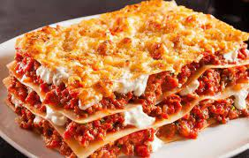

Les lasagnes

C'est toujours un plaisir
Ingrédients
- Lasagnes
- Tomates
- Viande hachée
- Fromage
Etapes
- Faire précuire les lasagnes
- Faire cuire la viande hachée
- Faire des couches de lasagnes/viande/sauce tomate/fromage dans un plat à gratin
- Mettre au four
Retour à l'accueil